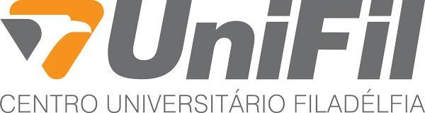
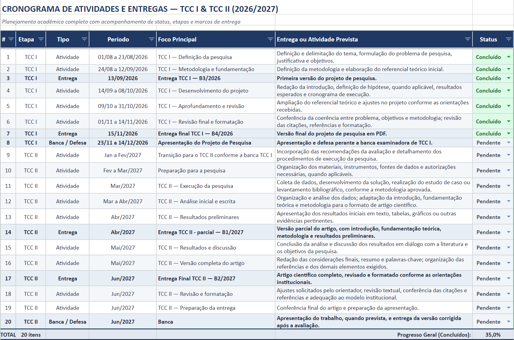

Uma Análise do Custo Computacional e da Abstração
Origem prática no estudo do Canhão de Gauss e delimitação metodológica ao método numérico RK4.
A Programação Orientada a Objetos consolidou-se historicamente para reduzir a complexidade cognitiva do desenvolvimento por meio de classes, encapsulamento e hierarquias.
A linguagem C++ compila diretamente para código de máquina nativo sem máquinas virtuais ou coleta de lixo, permitindo isolar com precisão o custo da abstração sobre tempo e memória.
Origem: Estudo do Canhão de Gauss (Coilgun) com a questão: um paradigma de programação afeta a dispersão de energia do disparo?
Delimitação: Para evitar que a montagem de protótipo físico e circuitos de potência se tornassem um gargalo de prazos, delimitou-se o escopo ao núcleo computacional: resolução de equações diferenciais via Runge-Kutta de 4ª Ordem (RK4) no Sistema de Lorenz.
O conflito entre a expressividade humana do código e a simpatia mecânica com o hardware.
A abstração em POO favorece a legibilidade e o modelo mental humano, mas impõe custos de despacho dinâmico (tabelas virtuais) e dispersão de memória.
O Data-Oriented Design (DOD) prioriza a disposição dos dados conforme a arquitetura física do processador, visando abstrações de custo zero em tempo de execução.
Objetivo geral, fundamentação estratégica das escolhas da pesquisa e etapas específicas.
Analisar o impacto computacional e o custo de abstração impostos pela Programação Orientada a Objetos (POO) e pelo Data-Oriented Design (DOD) na linguagem C++ na resolução de equações diferenciais via RK4, avaliando o compromisso entre expressividade do código e eficiência de execução.
Para isolar o impacto estrito da arquitetura de software e da modelagem lógica sobre o hardware, mantendo a formulação matemática e a complexidade algorítmica rigorosamente idênticas.
Linguagem multiparadigma que compila diretamente para código nativo sem máquinas virtuais ou Garbage Collector, viabilizando controle determinístico e mensuração pura de memória e CPU.
Algoritmos iterativos executam milhões de cálculos repetitivos sobre o mesmo conjunto de dados, tornando o padrão de acesso à memória e as taxas de cache misses o gargalo crítico de desempenho.
Representam o contraste direto entre a abstração centrada no modelo mental humano (POO/AoS) versus a simpatia mecânica centrada na física do processador (DOD/SoA).
<chrono> e contadores de hardware via perf stat (L1 misses, LLC misses, IPC e vetorização SIMD).
Convergência entre Engenharia de Software e Computação de Alto Desempenho (HPC).
Estudos Interlinguagens: Comparações clássicas (C, C++, Java, Python) mesclam os custos de máquinas virtuais, interpretadores e coleta de lixo com o paradigma de programação.
Manuais de Otimização: Guias técnicos em C++ tratam chamadas virtuais e alinhamento de memória como recomendações empíricas isoladas, sem investigação sob algoritmos numéricos determinísticos.
Carência de pesquisas experimentais que comparem sistematicamente POO e DOD implementando integradores RK4 dentro do mesmo ambiente compilado em C++, avaliando o preço estrito da abstração sobre algoritmos determinísticos.
A organização dos dados na memória determina a frequência de cache misses e o aproveitamento das linhas de 64 bytes.
O que é uma Cache Miss: A CPU não busca bytes isolados da memória; ela transfere blocos indivisíveis de 64 bytes (linhas de cache). Quando a CPU precisa de um dado ausente nas caches rápidas (L1/L2/L3), ocorre uma cache miss, forçando o pipeline do processador a pausar (stall) por dezenas ou centenas de ciclos. Em métodos iterativos com milhões de passos, as cache misses constituem o gargalo principal de execução.
POO Clássica (Array of Structures - AoS): Encapsula todos os atributos de uma entidade contiguamente. Ao iterar pelo RK4 para atualizar apenas uma coordenada (ex.: $X$), a CPU carrega compulsoriamente os atributos vizinhos não utilizados ($Y, Z \dots$). A cache enche com dados inúteis e ocorrem sucessivas cache misses por acesso disperso (strided access).
Data-Oriented Design (Structure of Arrays - SoA): Segrega atributos homogêneos em vetores contíguos. Ao atualizar $X$, a linha de cache de 64 bytes vem 100% preenchida com valores consecutivos de $X$. As cache misses são minimizadas e a auto-vetorização SIMD opera em capacidade plena.
Formulação para testes empíricos de falseabilidade sob metodologia científica.
A estruturação do código sob POO ou DOD em C++ não produz diferenças estatisticamente significativas no tempo de execução, nas taxas de falhas de cache L1/L3 e nas instruções executadas para o integrador RK4 sob complexidade algorítmica $O(N)$ rigorosamente idêntica.
A implementação em DOD apresentará reduções estatisticamente significativas nas taxas de cache misses e no tempo de execução em relação à POO clássica, evidenciando a penalidade imposta pela abstração de objetos e pelo acesso disperso na memória.
Pesquisa aplicada, quantitativa e experimental dividida em 4 etapas controladas.
-O3 -march=native.
std::chrono e contadores de hardware via perf stat (L1 misses, LLC misses, instruções e IPC) com $K=30$ repetições.
Desdobramentos técnicos previstos a partir da literatura de arquitetura de computadores.
Planejamento das etapas até a entrega da monografia e considerações finais.

Agradecimentos ao orientador Prof. Dr. Guilherme A. Cardoso e aos membros da banca examinadora.